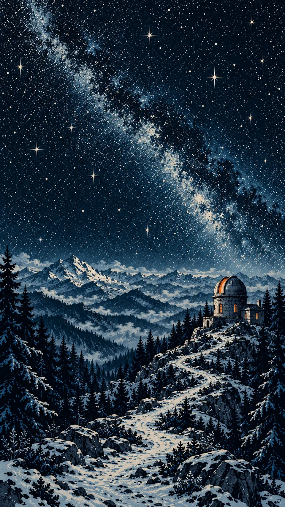

LAST SIGNAL
Последний сигнал / история одного ночного поезда
7 глав · 3 страницы ГЕНЕРАТИВНАЯ ИЛЛЮСТРАЦИЯ
ГЕНЕРАТИВНАЯ ИЛЛЮСТРАЦИЯИллюстрированная веб-история
JavaScript
CSS
SVG
Замысел
Рассказать одну поездку так, чтобы движение пейзажа, паузы между абзацами и смена света следовали за историей, а читатель сам выбирал темп.
Рассказ, визуальный концепт и разработка созданы с OpenAI-помощью. Шесть растровых иллюстраций сгенерированы специально для проекта; подвижные предметы и дополнительные планы нарисованы кодом.Задача
Визуальная сцена занимает экран, но рассказу нужно место для чтения. На узком телефоне панорама теряет композицию, а увеличенный текст не должен бороться с закреплёнными слоями.
Решение
Семь глав связывают путь с 00:07 до 06:03: платформа, окно вагона, тоннель, горная тропа, приёмник, купол и рассвет. Обычная прокрутка управляет слоями, рядом есть полная читательская версия и страница о создании.
Ключевые решения
02 / DESIGN & LOGICДвижение в темпе читателя
Положение поезда, планы пейзажа, настройка приёмника и створки купола вычисляются из прогресса главы. При прокрутке назад сцена возвращается по тому же пути; перехвата скролла нет.
Отдельная композиция для телефона
Три широкие иллюстрации дополнены тремя самостоятельными портретными версиями. Небо, тропа и обсерватория заново расположены в узком кадре; поезд, билет и аппаратура нарисованы отдельными SVG-слоями.
Рассказ можно просто прочитать
read.html содержит те же 21 абзац без сценической хореографии. Режим без движения учитывает системную настройку и выбор читателя; увеличенный текст автоматически получает статичную компоновку.
Ночь, высота,
первый свет.
Три панорамы одного вымышленного мира. Оригинальные иллюстрации проекта, созданные генерацией.

Холодная долина и один тёплый огонь. Движущийся поезд добавляется отдельным SVG-слоем.
Масштаб неба и маленькое здание задают расстояние. Тропа ведёт взгляд к месту назначения.

Тот же мир становится светлее: тёмные горы остаются, а небо переходит к тёплой бумаге.
Экран меняет
композицию.
Для телефона создана отдельная версия каждого пейзажа. У обсерватории стало больше неба сверху, а тропа входит в кадр снизу. Здание остаётся небольшим и читаемым справа.
В самой истории браузер выбирает широкую или портретную иллюстрацию через picture. SVG-планы и текст живут отдельно от растрового фона.
О создании истории, новая вкладка
Что можно
проверить.
Три сценария для знакомства с работой.
Поездка
Начни на платформе и прокрути несколько глав вниз, затем вернись вверх. Следи за поездом, расстоянием между планами и светом. Нет таймера или автоматического звука.
Открыть проект, новая вкладкаГлавы и повтор
Выбери главу в меню или на линии маршрута. В конце нажми «Ещё одна поездка», чтобы вернуться к началу; индикатор снова показывает первую главу.
Открыть проект, новая вкладкаСпокойное чтение
Переключи «Без движения» или открой «Рассказ целиком». Сравни текст с иллюстрированной версией, а на странице «О создании» посмотри описание иллюстраций и устройства истории.
Открыть проект, новая вкладкаПод капотом
- Чистые JavaScript и CSS, requestAnimationFrame и пассивное событие scroll; без runtime-библиотек и WebGL
- Детерминированные SVG-слои и обратимые функции прогресса; отдельный режим для увеличенного текста
- Статическая сборка трёх страниц, локальные шрифты и WebP; навигация по главам, native dialog и клавиатура